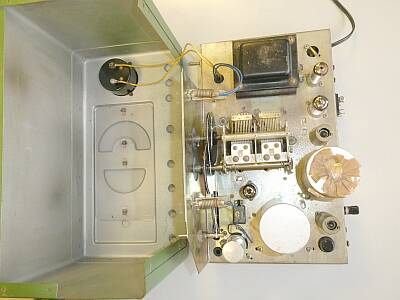 |
ケースからシャーシを取り出すとこんな感じ
ハリクラフターズ製品とは異なり、本機は、トランスレスではありません |
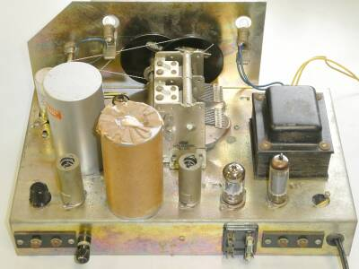 |
リアパネル側から
大きな円柱２個は、ＨｉｇｈＱをうたっているＩＦＴで、ご覧のように巨大です・・・
シャーシ上面左下の黒く見えるもの…ツマミですが、Ｓメータのゼロ点調整用です
ヒューズホルダが2個分？（カバー欠品）
ヒューズを左側に移すことで、商用電源の電圧低下に対応した９０V入力が選択できるようになっています
危ない仲間同士？で、その右がアウトプットトランスに接続する、＋Ｂ電圧がかかる端子です |
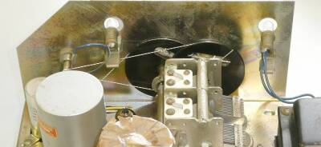 |
糸掛けダイヤル
実は、入手した時点では、メインとスプレッドのツマミの使い方が逆にしてありました
メインノブの方が直径が大きく、またツマミの周囲もスペースがあり操作性も良い、確かにこの選択には合理性がありますが、今回はオリジナルに忠実ということで、元の状態に戻しました
ダイヤル糸については、以前入手していた細いものですが、これを使用しました |
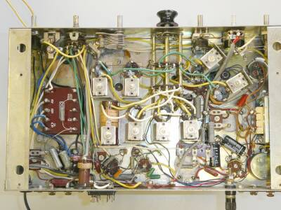 |
シャーシ底面／ケースから取り出した状態です
ツマミは、バンド切替用に仮に取り付けたものです
リアパネル左寄り、ヒューズホルダ近くに見えるコイル、こちらがＢＦＯ発振コイルです
ＢＦＯ信号の検波用６ＡＶ６との結合は、２本の配線をよじってＣ結合としてあります
これら、あるいは上記広告文に興味のある方は、創業者の茨木悟氏（Ｊ１ＦＱ／Ｊ２ＩＨ）の記事を探してご覧ください、うんちくが一杯書いてあります |
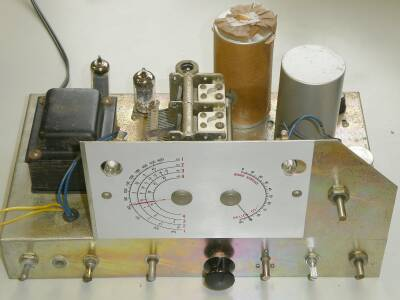 |
フロントパネル側からシャーシ上面
|
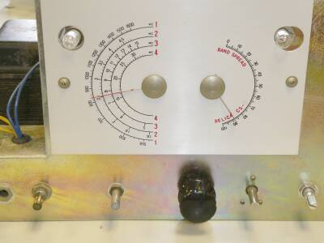 |
ダイヤル部のアップです
2個のＰＬで照明されます
片方切れていました（空気が入って白濁していました）
古いＦＬ-１００Ｂからパチって交換しました
Ｅ１０ ８Ｖの電球・・・まだ売っているかなぁ！？ |
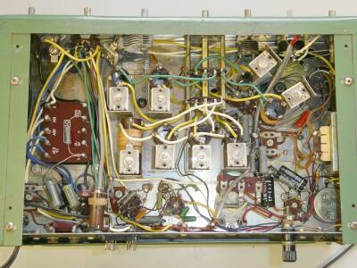 |
シャーシ底面／ケースに収めたままの状態
ご覧のように、ケースに収納しても、底板を外すことで必要な調整は可能です
ＩＦＴの調整も底面からＯＫ、トリマです
右端中央に見えるトランス風のものは、平滑用チョーク・トランス（コイル）です |
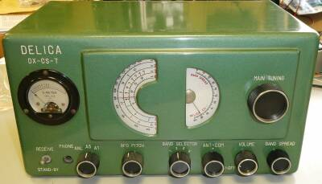 |
トラブル対策を終え、仮に組み立ててみました
この後、最終調整とデータ取りです |
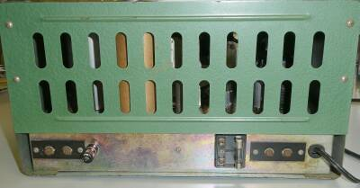 |
リアの蓋？を取り付けた様子です
このように、ちゃんとカバーが用意されています
ヒューズホルダとアウトプットトランス接続端子については、安全策を考えたいところです |
|
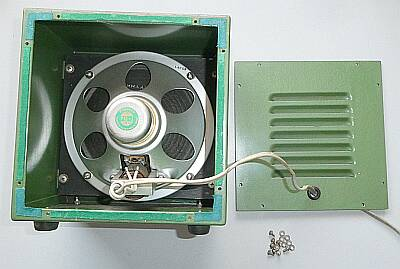
純正のスピーカーです
裏ブタを開けて写しています
スピーカーが、出力トランスを背負っています |
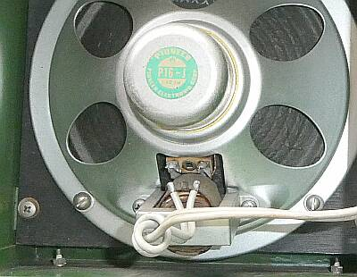
＋Ｂ電圧がかかった端子が本体背面にあることに |
貴重な純正スピーカーかと思います（本体完成品での購入時しか入手はできなかったのではないかと想像されます）
パイオニア製のユニットが内蔵されています
本体背面には、スピーカーに接続する端子が用意されていますが、ここには＋B電圧がむき出しということ
昨今の安全管理の上では、考えられない構造です
免許を持った人しか使わない前提でしょうね、きっと |
|
さすがに古いもので、今回はベーシックな？ところから問題が一杯ありました
まずテスターによる電源回路チェックでは問題がなかったので、通電してみました
２分足らずで１Ａのヒューズが飛びます（６Ａのヒューズが入っていた）
真空管をすべて抜いて通電しても同じ症状です
発煙を確認・・・０．０１μのオイルコンデンサが熱くなっています
絶縁不良のオイルコンデンサが複数ありましたので、ＡＦ段カソードバイパス用以外すべて交換しました
これで電源問題は解決
ＡＦボリュームのガリが酷い・・・結合コンデンサの絶縁不良で電圧がかかっていたことも余計劣化を進めたか・・ＳＷ付き５００ＫΩ／Ａカーブのものを持っていたので交換、これで本件は落ち着きました
次にダイヤル・・・メイン／スプレッドいずれも糸掛けによる駆動ですが、その糸が劣化により完全に緩んでいました
ちょっと苦労しましたが、ダイヤル糸の張替えを行いました
ここまでの対応で、ＢＣ帯についてはローカル放送が受信が出来るようになりました
この時点では、ＲＦコイル、ＩＦＴ等の調整は行ってません
ＨＦ（短波帯）については、全く感度が取れていません
ＩＦＴの調整
きちんと４５５ＫＨｚのＳＳＧ信号を入れて調整、です
ここできちんと４５５ＫＨｚに合わせておかないとＢＦＯ周波数にも影響します
確かにシャープというかクリチカルです
この調整で大きく利得が向上…調整が外れていました！
ＯＳＣの調整
ＢＣ帯／バンド１から、バンド２、そしてバンド４は、ほぼ正常と思わえる受信ができるようになりました
バンド３についいては、カバー範囲の下半分が受信できません（OSCが発振停止）
これには悩みました
結論は、マイカコンデンサの劣化でしたが、回路図に容量の記載がなく、現物も劣化していて値が読めません
実体配線図から、０.００５μであると読み取れ、交換することで正常に発振するようになりました
Ｓメータ動作が変
「０」点調整が出来ないし、その動きもおかしい（逆ブレする）
メーター「０」点調整用ＶＲに＋Ｂから加電する２０ＫΩ固定抵抗が断線していました
以上で、見つけた問題はすべてクリアできました
劣化の進んだＡＣコード、ゴムブッシングなども交換、整流ダイオードは劣化は無かったのですが、短い足をリード線で延長して配線してあったので、長いリードのダイオードに交換しました
|
|
最終的に得られた受信感度について
いずれもS/N １０ｄＢが得られる条件です
|
ＳＳＢ 信号ON/OFF |
ＡＭ 30%変調 ON/OFF |
| ７.１０ＭＨｚ |
２μＶ |
１０μＶ |
| １４.１５ＭＨｚ |
２μＶ |
１０μＶ |
意外と高感度
それ以上に静かです
ＳＳＢ（ビートをかけて）の受信時は、ＡＧＣは強制的にＯＦＦですが、７ＭＨｚ帯のＱＳＯがちゃんと復調できます
ＢＦＯを固定して、スプレッドダイヤル操作で選局できます、これは驚きです
分離もそれなりに出来ています、少なくとも一般的な４５５KHｚＩＦＴの能力とは比較になりません
余程強い信号でない限り、ＲＦゲイン調整もないのにちゃんと復調できます
ＲＦゲイン調整の代わりに、アンテナコンペンセーターでわざと離調して逃げる手もありそうです
先頭に記したセールストークにあるように、たった５球の構成ながら、当時の８球クラスの通信用受信機の対抗馬として十分使用が可能であったと思われます（ただしＳＳＢ受信であれば、１４ＭＨｚ帯以下）
誇大広告ではありませんでした |